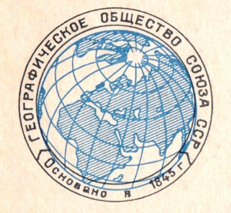

18 August 2020 will mark 175 years since the founding of the Russian Geographical Society. This is the oldest currently operating public organization in Russia. And in the world, only the Parisian, Berlin Geographical Society and the Royal Geographical Society in London are older than the RGS. The main task of the new organization was "to gather and send the best young forces of Russia to a comprehensive study of their native land."
Read more here"The main idea of the founders of the Society is to draw all the best forces of the Russian land to the study of the native land and people living on it"
Petr Petrovich Semenov-Tyan-Shansky
The Russian Geographical Society was founded by the order of Emperor Nicholas I in 1845. The idea of the Society was created by Admiral Fedor Petrovich Litke, the mentor of the future first President of the Russian Geographical Society, Grand Duke Konstantin Nikolaevich. The main aim of the new organization was to collect and to guide the best young Russian forces to a comprehensive study of the native land.
The Russian Geographical Society headquarters opened in Moscow on the 15th of January, 2013. The ceremony was attended by the Chairman of the Board of Trustees Vladimir Putin, the President of the Society Sergei Shoigu, Moscow Mayor Sergei Sobyanin, members of the Society’s Board of Trustees, members of Media Board of the Society and other honored guests.
The Moscow headquarters are located in the 19th century building which used to be the Moscow Merchant Society’s commercial apartment building. During the Soviet Era it served as the dormitory of ethnological faculty of MSU. Members of the Russian Geographical Society were among founders of the faculty.
The Moscow headquarters is a modern complex that holds a library, a media-studio hall, an exhibition hall, a printing office and office spaces for the Executive Directorate of the Society.
Since its foundation, the Russian Geographical Society has been involved in organizing diverse exhibition projects.
The Russian Pavilion became the first major geographical exhibition of the Russian Geographical Society. It was organized by the Russian Geographical Society at the International Geographic Exhibition as part of the II International Geological Congress (CIM) in Paris in 1875.
In Soviet times, the Society continued to participate in national economy achievement exhibitions, historical exhibitions and photo exhibitions.
After the reorganization in 2009, the exhibition activities of the Russian Geographical Society broke new ground. Thus, the organization participated in a number of major photo contests and exhibitions, becoming the organizer or co-organizer of some of them.
Since 2015, the Russian Geographical Society has held an annual "Most Beautiful Country"photo contest. Works by contest finalists and winners are exhibited in Russia and abroad.
Since the beginning of 2018, the Russian Geographical Society has organized and held more than 50 photo exhibitions in different cities of Russia, as well as abroad (Malta, Argentina, Bolgaria, Romania, Qatar, Vietnam and other countries).
Federal Number/ Fax: 8-800-700-1845
International Number/Fax: +7-495-225-2760
E-mail: rgo@rgo.ru
Phone operators working hours:
Monday-Friday: 9 a.m. – 7 p.m. (Moscow time)
Thursday: 9 a.m. – 5:45 p.m. (Moscow time)
Weekends: days-off